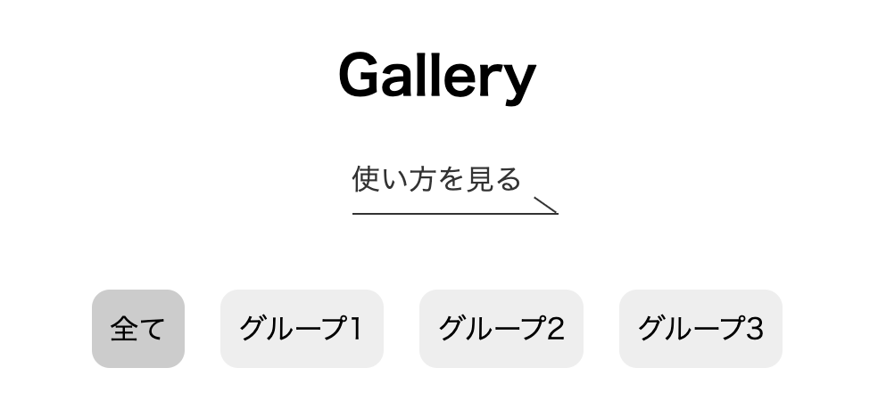
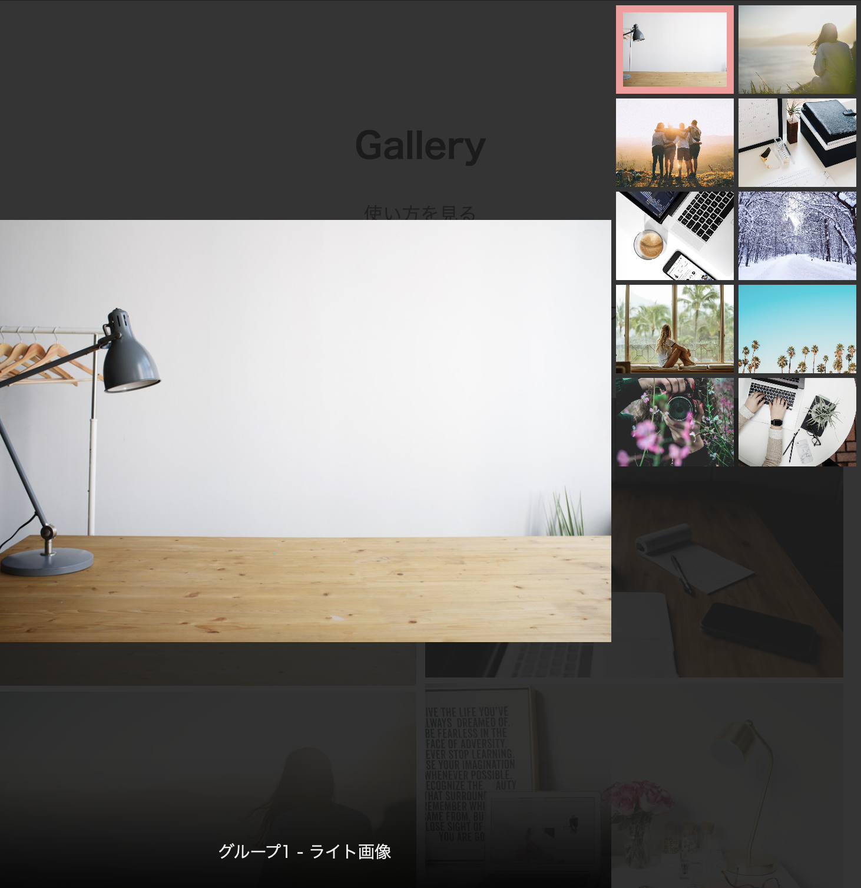
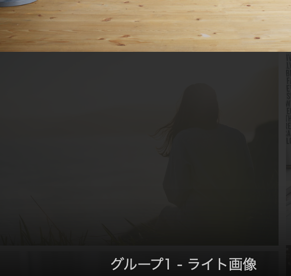

はじめに、上のボタンでギャラリーページを開きます。
- 使い方①
- 画像によってジャンル分けをしてありますので、「全て」ボタンの右側ボタンでジャンルを選択します。

- 使い方②
- 表示されている画像一覧の中から画像をクリックすると拡大され、その画像について簡単に知ることができます。

- 使い方③
-
開いた画像の下部に「キャプション」と呼ばれる物があります。
その文字をクリックすることで、画像の詳細を説明するページへ飛ぶことができます。

※画像は開発中のものです。実際の環境とは異なる場合があります。